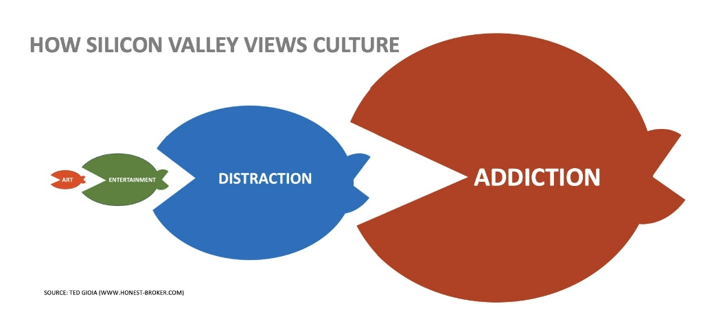

Primero estuvo y está el arte.
El entretenimiento poco a poco fagocitó al arte.
Más tarde la distracción se comió al entretenimiento.
Ahora la addición (a la dopamina, claro) está en la parte más alta de la cadena trófica.
Y al final es el dinero como gran devorador.
